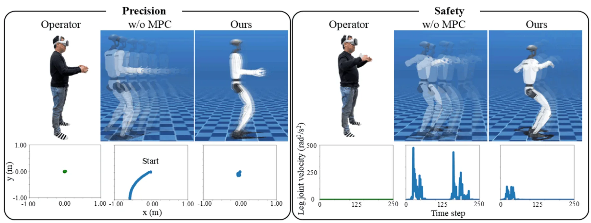
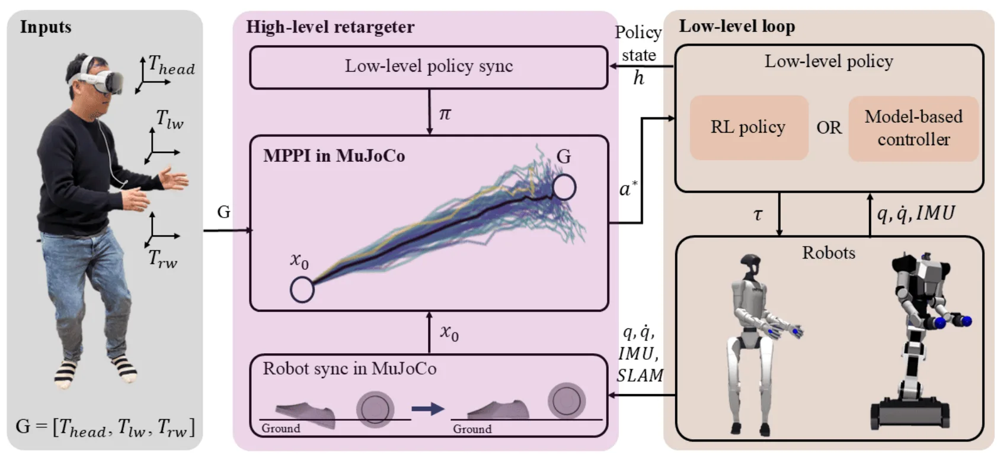
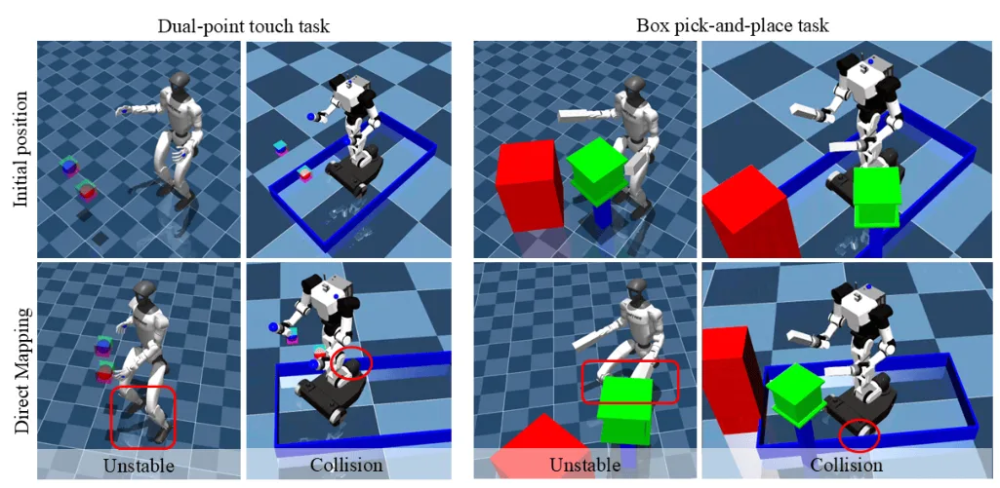
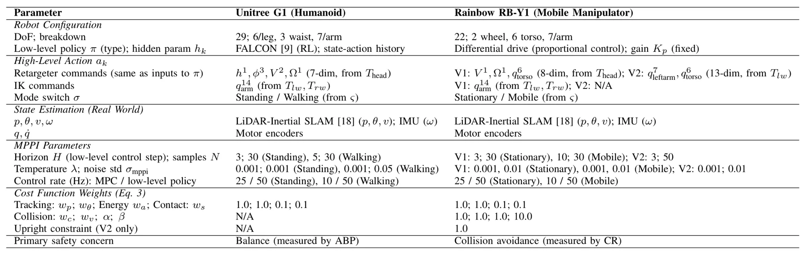
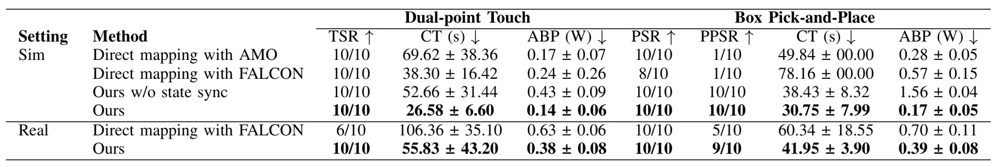
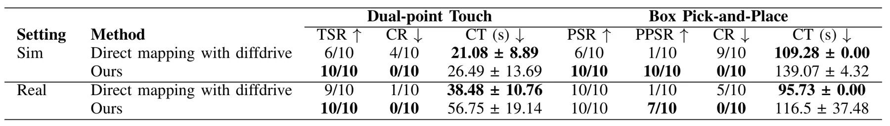
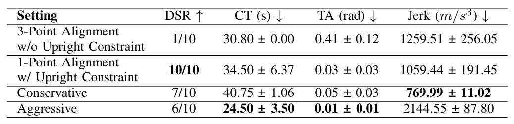

X-OP：通过 MPC 重定向实现跨形态全身遥操作X-OP: Cross-Morphology Whole-Body Teleoperation via MPC Retargeting
主要是机器人遥操作系统论文，与 SLAM 关系在全局位姿反馈和数据采集平台；可作为集成方案跟踪。
一句话工作总结
X-OP 用 MPC 把单 XR 设备操作者意图重定向到不同机器人，并用 SLAM 全局位姿反馈降低遥操作漂移。
摘要
全身遥操作对于 loco-manipulation 数据采集很重要，但外骨骼或多相机系统成本高、复杂且受环境限制。单 XR 设备加端到端 RL 的近期方法降低了门槛，却常需要针对每种机器人重新训练策略，且 motion retargeting 忽略动态可行性。X-OP 提出一个由单 XR 设备驱动的分层全身遥操作框架，可跨不同机器人形态泛化而无需机器人特定策略重训。核心是基于 MPC 的 motion retargeter，同时优化与操作者意图的对齐和机器人动态可行性，为已有低层控制器生成命令。为保证在线鲁棒性，系统在每个 MPC step 重置 simulator state 以处理真实测量噪声和接触敏感性，并集成 SLAM-based global pose feedback 缓解长时漂移。仿真和真实实验展示了在人形机器人与移动机械臂上的部署效果。
Whole-body teleoperation is essential for scalable robot data collection in loco-manipulation tasks, yet existing approaches relying on exoskeleton suits or multi-camera setups impose prohibitive cost, complexity, and environmental constraints. Recent methods using a single extended reality (XR) device with end-to-end reinforcement learning policies partially address these limitations but require robot-specific retraining, suffer from out-of-distribution failures, and rely on motion retargeting that neglects dynamic feasibility. We propose a hierarchical whole-body teleoperation framework driven by a single XR device that generalizes across diverse robot morphologies without retraining robot-specific policies. A Model Predictive Control (MPC)-based motion retargeter jointly optimizes alignment with the operator's intent and the robot's dynamic feasibility, generating optimal commands for existing low-level controllers. To ensure robust online execution, we introduce a state synchronization method that resets the simulator state at each MPC step to handle noisy real-world measurements and contact sensitivity, and integrate SLAM-based global pose feedback to mitigate long-term drift. Simulation results show higher success rates on whole-body control tasks for both a humanoid (over 30% lower completion time and 20% lower power consumption) and a mobile manipulator (zero collisions) compared to baselines. Real-world experiments further validate the effectiveness and flexibility of our method, demonstrating the successful deployment of the proposed retargeter on both platforms for whole-body control tasks and the ease of allowing users to adjust teleoperation behavior based on their preferences. This plug-and-play framework offers a scalable, morphology-agnostic solution for whole-body robot teleoperation, enabling real-time behavioral customization and broad applicability across platforms.
中文解读摘录
- 作者：Yongfei Guo, Qizhou Huo, Xuan Sun, Yuanhao Gong；类别：cs.CV / cs.GR / cs.MM / eess.IV / math.OC；发布日期：2026-06-06；采集 score=17
- 核心问题：标准 3DGS photometric loss 对平坦区和结构丰富区一视同仁，容易牺牲边缘、轮廓和细节；EGGS 虽引入 edge-guided weighting，但主要依赖一阶梯度和线性权重。
- 方法亮点：LEGS 用二阶 Laplacian 结构响应替代一阶梯度响应，并通过非线性 response-to-weight 函数生成 pixel-wise loss 权重；渲染管线不变，属于可插拔的 loss-level 扩展。
- 结果信号：在完整 Tanks&Temples 与 Mip-NeRF360 上，论文称相对 3DGS 最高提升 1.68 dB PSNR，相对 EGGS 最高提升 0.52 dB；迁移到 FastGS/FasterGS 后最高仍可提升 1.69 dB。
- 关注价值：如果代码可复现，它是低侵入式提升 3DGS 地图边缘清晰度和细节保真的方法，适合与 SLAM/重建后的 Gaussian 地图优化阶段结合。
图表/页面预览

{kind=link}

{kind=link}

{kind=link}

{kind=link}

{kind=link}

{kind=link}

{kind=link}
